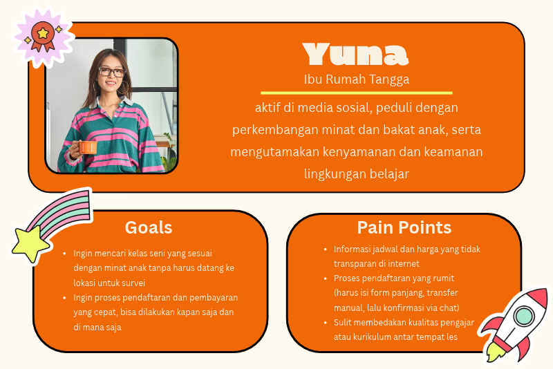
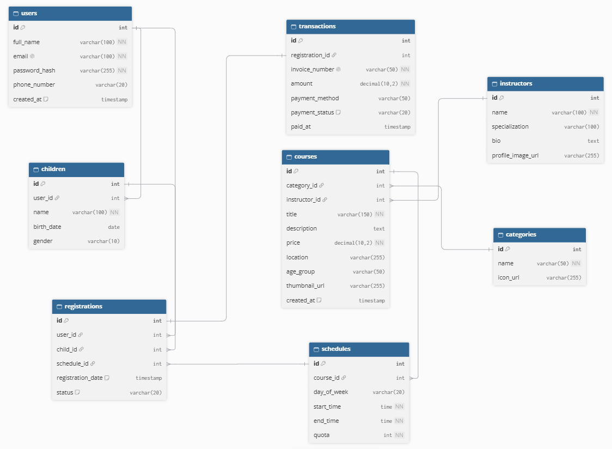
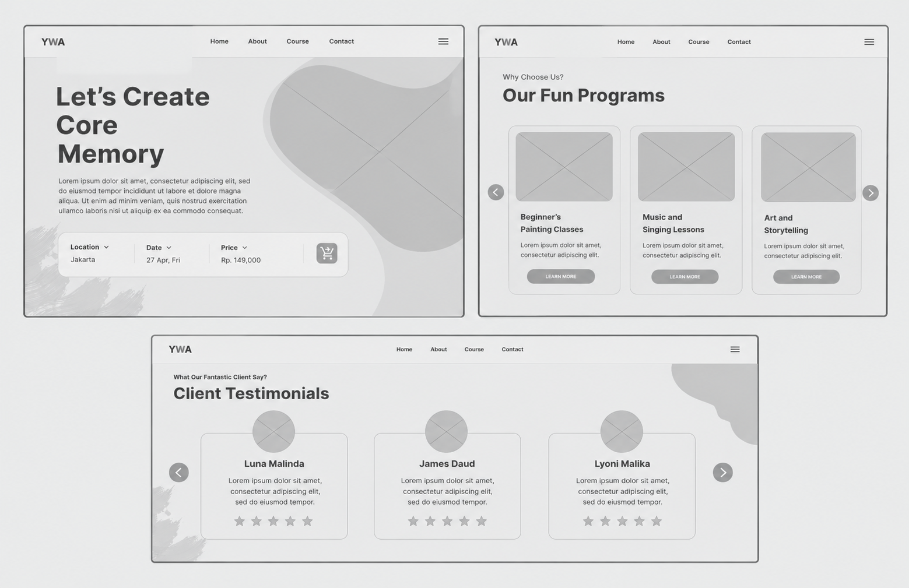
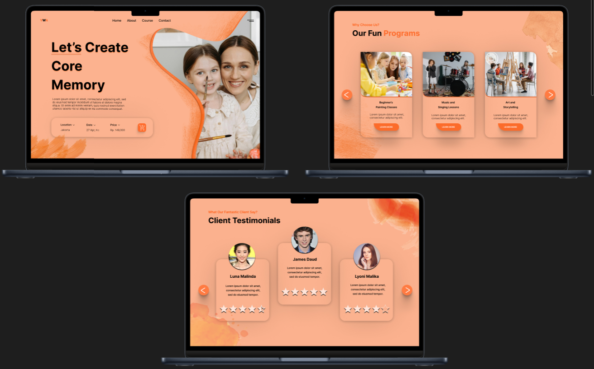

Konteks: Proyek ini merupakan pengembangan antarmuka Website (UI/UX Design) untuk Artsparks, sebuah platform one-stop solution yang memudahkan orang tua untuk mendaftarkan anak-anak mereka ke berbagai kelas seni, seperti melukis, musik, tari, dan lainnya.
Masalah: Saat ini, orang tua seringkali merasa kesulitan mencari informasi aktivitas seni yang terpercaya untuk anak. Proses pendaftaran biasanya dilakukan secara manual (via WhatsApp atau telepon), yang memakan waktu dan rentan terjadi kesalahan administrasi. Selain itu, jadwal kelas yang tidak transparan dan proses pembayaran yang terpisah membuat pengalaman pengguna menjadi kurang efisien.
Tujuan: Merancang antarmuka website yang intuitif, ramah orang tua, dan aman. Pengguna dapat dengan mudah mencari kelas seni berdasarkan kategori (melukis, musik, dll), melihat profil pengajar, memilih jadwal, dan melakukan pembayaran secara seamless dalam satu alur yang mulus.
Saya melakukan wawancara dengan 3 orang tua muda yang aktif mencari kegiatan ekstrakurikuler untuk anak mereka. Dari riset ini, saya membuat User Persona:

Konsep Relasi Utama
1. Users (Parents) memiliki banyak Registrations (Pendaftaran).
2. Courses (Kelas Seni) memiliki banyak Schedules (Jadwal) dan Instructors (Pengajar).
3. Registrations adalah parent dari detail pembelian (terhubung ke Transactions).
4. Transactions digunakan untuk melacak status pembayaran (Payment Status).

# Home & Search: Halaman utama yang menampilkan highlight kelas (seperti Banner promo), kategori seni (Melukis, Musik, Tari), serta fitur pencarian dengan filter lokasi dan usia anak.
# Course Detail : Halaman di mana pengguna dapat melihat detail lengkap kelas, silabus, profil pengajar, galeri foto kelas, serta jadwal yang tersedia.

Pendekatan Visual (UI): Desain akhir menggunakan palet warna hangat (oranye soft dan krem) yang dipadukan dengan putih untuk menciptakan kesan ceria, kreatif, aman, dan terpercaya. Tipografi menggunakan sans-serif yang ramah dan mudah dibaca. Ikon-ikon dibuat playful namun tetap profesional, mencerminkan dunia anak-anak.

# Quick Class Discovery: Pada halaman utama, pengguna disajikan card kelas yang menampilkan gambar anak-anak sedang berkegiatan, nama kelas, dan harga. Ini memudahkan orang tua untuk memindai pilihan dengan cepat.
# Seamless Registration Flow: Pada halaman detail, saya merancang alur pendaftaran yang jelas. Pengguna hanya perlu memilih jadwal, memasukkan data anak, dan langsung menuju halaman pembayaran tanpa perlu mengisi form berulang kali.
# Integrated Payment Method: Halaman checkout menampilkan ringkasan pesanan dan opsi pembayaran populer (Virtual Account, E-Wallet, Kartu Kredit) dengan ikon yang jelas. Ini mengurangi keraguan pengguna saat melakukan transaksi finansial.
Hasil: Desain website Artsparks berhasil menyatukan kebutuhan orang tua akan kemudahan administrasi dengan kebutuhan anak akan aktivitas seni yang menyenangkan. Antarmuka yang clean, dominan warna hangat, dan alur pendaftaran yang singkat membuat platform ini terasa ramah dan mudah digunakan.
Pembelajaran (Learning): Melalui proyek ini, saya belajar bahwa Visual Hierarchy sangat penting dalam aplikasi multi-fungsi. Menempatkan tombol "Daftar Kelas" dan "Lihat Jadwal" secara strategis membantu pengguna fokus pada tujuan utama mereka. Saya juga belajar bahwa pemilihan warna yang tepat (seperti oranye pastel) tidak hanya berfungsi estetis, tetapi juga membangun kepercayaan (trust) orang tua terhadap platform yang berhubungan dengan anak dan biaya pendidikan.